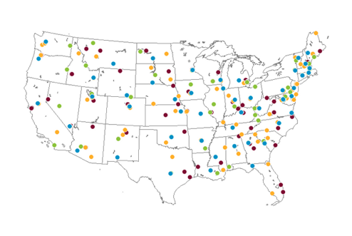
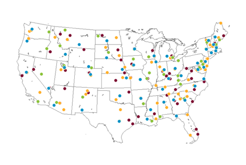
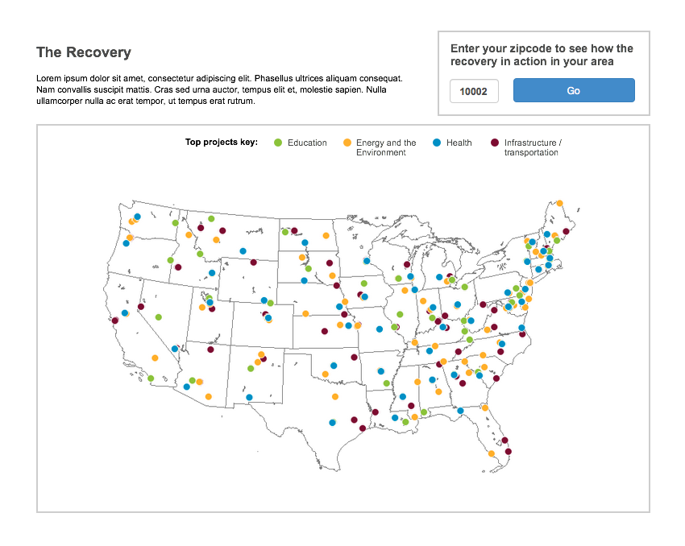

Obama for America:
Project Atlas
Project Atlas
An app designed to make President Obama's accomplishments
engaging and relevant to voters at a local level
engaging and relevant to voters at a local level
Screen shot of Project Atlas zoomed in on Florida.
CHALLENGE
From research conducted at the campaign's Chicago headquarters, we knew that many voters respond favorably to talking points about Obama's first term, but only when it's about their own community.
Project Atlas is an app that makes Obama's accomplishments engaging and relevant to voters at a local level. It does this by detecting user location and offering county-level information about improvements to health care, taxes, clean energy, and more.
MY ROLE
Based in the San Francisco Technology Field Office, I led the ideation, wireframing and ran weekly presentations to campaign headquarters. In addition, I led the dev team, wrangled data, coordinated the efforts of more than a dozen volunteers, and wrote a good portion of the JavaScript and CSS.
Making the president's achievements relevant to the user's location is key.
How it works:


In the beginning, all we had were large, unprocessed government data sets.
CONCEPT DEVELOPMENT
I set up a geospatial database and started making maps. I made a lot: children gaining health care; renewable energy investments; tax savings, and many more.

 

WIREFRAMES
Our stakeholders liked the direction of a recovery-themed map I created, which used data about the 2009 stimulus bill. The first wireframes showed stimulus projects color-coded by category. These categories corresponded to the campaign's core policy areas: education, energy, health and infrastructure. Since most of the data was uncategorized, we mobilized volunteers to label about 2,000 projects.

The first wireframes I created show the top five recovery projects per state. Projects are color-coded to correspond to campaign themes: education, energy, health and infrastructure. The maps were created using real data.

As the user zooms in, more and more projects are revealed. At each zoom level, the most relevant projects are highlighted in the inset at the right.
Once we had some sample data to work with, the engineers and I started writing code. We planned to have a simple prototype running in a week. Things were moving along. So far, so good.
PIVOT
In July, things abruptly changed for the worse. Just as the recovery map concept started to take shape, the Romney campaign attacked the stimulus bill. The Obama campaign banned the mention of it. The project was stopped in its tracks.
Campaign headquarters put the kibosh on our project. We were stopped in our tracks.
Everything could have easily ended at this point. Rather than give up, I went back and re-evaluated the data sets we hadn't used, and came up with a new solution. It detected the user's location and displayed the president's accomplishments across all of the campaign's policy areas. The digital director at headquarters liked the new direction, and gave us the green light.
A NEW DIRECTION
Due to time constraints, I skipped wire framing and worked directly with the prototype we had started.
Leveraging Google's mapping API, we were able to detect user location and populate the UI with locally-focused talking points. Since some data was geocoded by latitude and longitude, and others by county and state codes, we built the underlying codebase to sort out what information to display at what zoom level.


Using Twitter's Bootstrap UI framework, I was able to simultaneously design for tablets and phones, helping us keep to a very tight timeline.
By running development in parallel, we designed for all screen sizes simultaneously, and caught difficult UX problems early.
Edge case: Many zipcodes are in multiple counties. When a user's zip code is in more than one county, they are prompted to select from a menu. One zip code in Virginia, shown above, is in four counties.
FINAL DESIGN REFINEMENT

An early version with all the working components and UX design completed. The app detects where the user is located and supplies talking points relevant to them across key policy areas.

The final version of the app zoomed in on northern Ohio.
SUCCESS
The final weeks of the campaign were total chaos. Despite this, we managed to launch Project Atlas the morning of October 1st. Later that day, the campaign sent the URL out on Obama's Twitter account, where it reached the president's 42 million followers.
Project Atlas launched on Obama's Twitter account five weeks before election day, where it reached the President's 42 million followers.